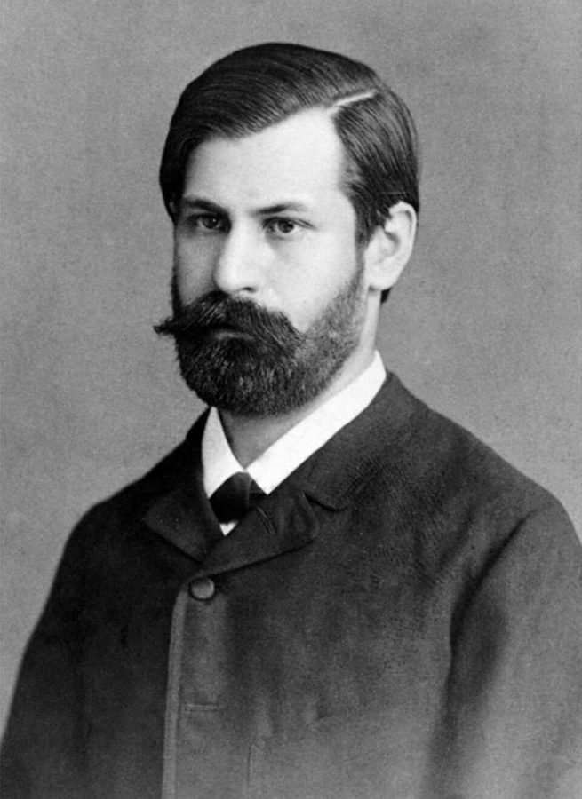
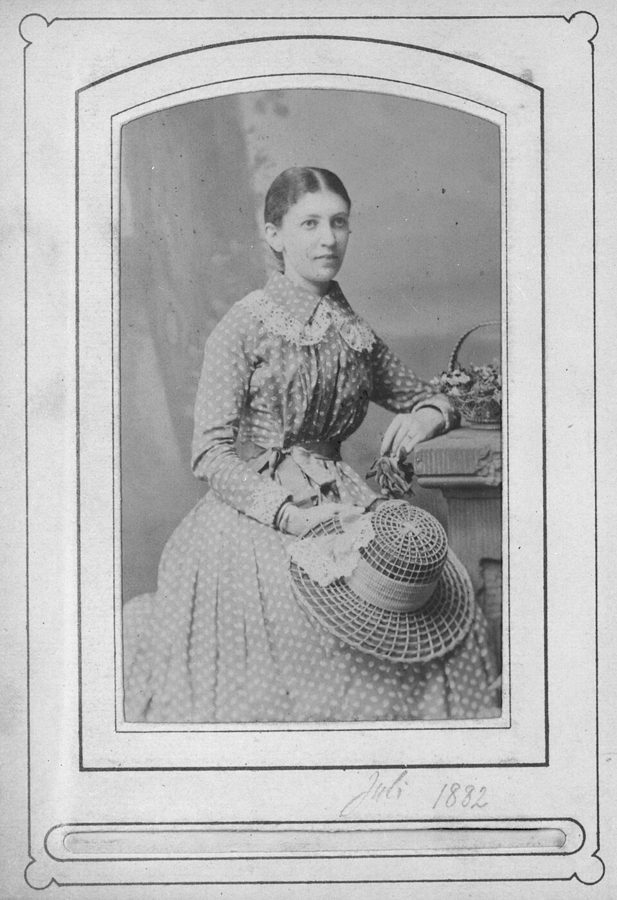
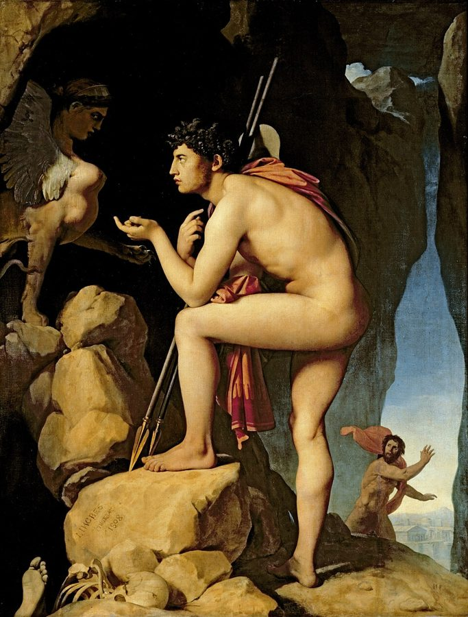
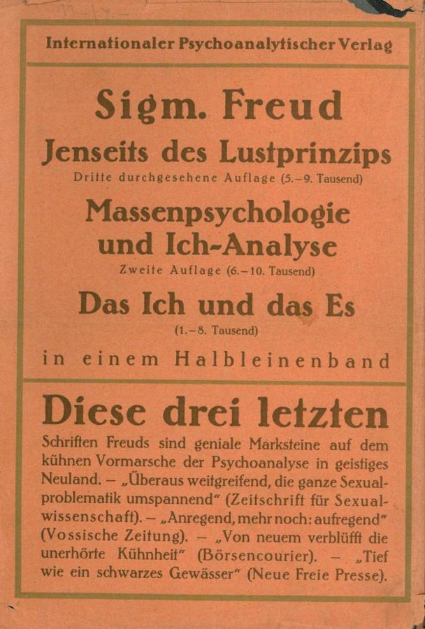

to his name
… minor publications to his name, none …
名下有
seventeen publications to his name = 发表过十七篇东西。这里不是「以他命名」。
弗洛伊德篇的前两节。Phillips 从两段弗洛伊德的文字讲起：一段是 1885 年年轻的弗洛伊德写给未婚妻的信，说他烧掉了多年的笔记和手稿，好让将来的传记作者扑空；一段是 1920 年《超越快乐原则》里关于生命起源的猜想：生命一出现就想回到无生命，只是要绕远路，按自己的方式死。Phillips 想用这两段文字把「死亡驱力」和「反对传记」接到一起。读的时候抓两条线：被认识和不被认识；生命故事怎样成了死亡故事。

达尔文篇落在一句「仿佛」上：蚯蚓又挖空又保存，达尔文的工作也是；Phillips 还说，达尔文和弗洛伊德一样关心破坏怎样保存生命。序章第 14 段预告过两条线索：达尔文一辈子对蚯蚓感兴趣，弗洛伊德一辈子反感传记。这一页开始第二条。第 20 段提的两个问题，后一个（他为什么那样反对传记）留给下一页；下一页第 24 段还会回到这里讲的生命起源的故事；再往后，第 46 段起 Phillips 要拿传记作者笔下弗洛伊德自己的死，来对照这一页的理论。
一个人想「不被看透」，和生命想「按自己的方式死」，能是同一件事吗？
读的时候带着这几个问题。不用先找答案，读完回来对照「检查一下理解」。
两节各从一段弗洛伊德的原话出发，再由 Phillips 一层层往外读。§1 的原话是那封信，读法分几步：斯芬克斯的比喻，「不想被认识」的愿望，然后跳到死亡驱力、移情和「知识」。第 6 段 Anna Freud 那句引文来得突然，那是 Phillips 把 1885 年接到 1920 年的地方。§2 的原话是《超越快乐原则》第 5 章，Phillips 先复述，再质疑（第 15 段一连串问号），然后把这段理论当成弗洛伊德的自传来读，第 18 段又把引文从头走一遍。最后一段的两个问题，是给后面几节开头。
作者落在哪：Phillips 提出（多半带着 as it were、one might say），死亡驱力可以看作我们身上执意「不想知道」、会不自觉地拆掉自己人生故事的那一部分；在弗洛伊德那里，最初的生命故事就是一个怎样死的故事。最后他说，要这个概念做什么，和弗洛伊德为什么反对传记，是连在一起的两个问题。
这一页是原书弗洛伊德篇的第 1–2 节。原书没有小标题，只在节与节之间空一行；粗体的节名是本站起的，斜体是这一节第一段开头的几个词，在电子书里搜它就能跳过去。读完打个勾。
先把这一页用到、作者默认你懂的几个概念讲一遍。讲的是概念本身，作者拿它做什么，读原书时自己看。
弗洛伊德《日常生活的精神病理学》（1901 年在杂志上发表，1904 年出书）里的说法，书里专有一章讲「症状性行为和偶然行为」。指那些看上去随手、无意的小动作：玩弄口袋里的钥匙，哼一段曲子，把东西「碰巧」落在别人家里。弗洛伊德认为它们不是偶然的，是人不知不觉地把说不出口的念头演了出来。它和口误、笔误同属一类，区别在于口误是想做甲却做成了乙，症状性行为是根本没打算做什么。今天的心理学承认小动作和口误常有来由（疲劳、分心、刚想过的词），但「每一个都表达被压抑的愿望」这一点没有实证支持。
在这一页：第 1 段。Phillips 说，信里弗洛伊德最得意讲的那件事（烧笔记），用他后来教我们的话说，就是一次症状性行为：演出了他说不出口的东西。
弗洛伊德的术语，1895 年的《癔症研究》里已经出现，1905 年发表的「朵拉」病例的后记里讲得最完整。病人把早年对父母等重要的人的感情和期待，不知不觉地搬到分析师身上：爱他、怕他、跟他赌气，好像他就是当年那个人。弗洛伊德起初把它当成治疗的障碍，后来认为分析移情正是治疗的核心。注意中文「移情」也常指美学里的「移情作用」（empathy，把自己的感情投到对象上），两者不是一回事。今天的社会心理学有实证的对应：Susan Andersen 等人的实验发现，新认识的人只要有几分像你生活里某个重要的人，你就会拿对那个人的印象去理解他。
在这一页：第 8–9 段。Phillips 把移情放进一个更大的问题：我们对「认识别人」寄望太多。他说分析移情也许不是让人看得更准，而是治这份对「知识」的迷信。
词根是希腊文 telos（目的、终点）：用「为了什么」来解释事物。亚里士多德把「目的因」列为四因之一：橡子长成橡树，因为橡树就是它的目的。达尔文之后，生物学的解释倒过来：眼睛不是「为了看」才长出来的，而是看得见的祖先留下了更多后代；看上去的「设计」是选择的结果，不是事先的计划。说一个人的一生「有目标、有主线、有归宿」，在讲故事的层面也是一种目的论：先认定结局，再回头把每一步解释成通向结局的路。
在这一页：第 15 段。Phillips 问：「按自己的方式死」，是不是让弗洛伊德又被一种虚假（尽管带着反讽）的目的论引诱了回去，好像人生有计划、有归宿？
按在书里出现的顺序排，标题前是节号。作品只讲到读懂这一页需要的程度。
1885 年春天，弗洛伊德在维也纳总医院当年轻医生，和汉堡的 Martha Bernays 订婚快三年了，因为没钱，婚事一拖再拖，两人主要靠通信。这年秋天他去巴黎跟沙可（Jean-Martin Charcot）学习，「精神分析」这个词要到十多年后才出现。信里说他烧掉了十四年来的笔记、信件和手稿，只留下家信和她的信，还说要让传记作者们去发愁。第 1、5 段说他当时二十九岁：他生于 1856 年 5 月 6 日，写这封信的 4 月其实还没满 29 岁。这封信的德文原文本站没有找到公有领域的版本，所以「原典」里没有它。


希腊神话：斯芬克斯（Sphinx）是人面狮身、带翅膀的怪物，守在忒拜城外让过路人猜谜，猜不出就吃掉。谜语一般说成「什么东西早上四条腿、中午两条腿、晚上三条腿」，俄狄浦斯答出「人」，斯芬克斯就跳崖死了。他因此当上忒拜王，娶了王后，后来才知道那是自己的母亲，弗洛伊德借这个故事命名了俄狄浦斯情结。第 3 段 Phillips 反过来用：年轻的弗洛伊德想当的不是解谜的俄狄浦斯，而是出谜的斯芬克斯。「斯芬克斯情结」是 Phillips 自己造的词，不是精神分析的术语。
第 6 段引 Anna Freud 一句话给死亡驱力下定义：它和生命本能的目标相反，拆散联系、毁灭生命。本站没有查到这句出自她哪篇文章。第 10 段引 Laplanche：弗洛伊德要写的是一部无意识的历史，一部有断裂的历史，埋下和重新冒出的时刻最要紧。出处本站也没有查到。Phillips 借「埋下和冒出」把话头接回达尔文：两人都追踪过这件事，在物种里，也在个人身上。
第 8 段说，弗洛伊德想把死亡驱力说成纯粹「坏」的，这遮住了它替他承载的一些更让人不安的价值，就像《失乐园》（1667）里的撒旦之于弥尔顿（Milton）。这个比方背后有一个有名的说法：布莱克（William Blake）在《天堂与地狱的婚姻》里说，弥尔顿写天使和上帝时束手束脚，写魔鬼和地狱时却挥洒自如，因为他是真正的诗人，不自觉地站在了魔鬼一边。Phillips 没有提布莱克，这是本站补的背景。

弗洛伊德 1920 年出版的一本小书。第一次世界大战之后，他注意到一些和「趋乐避苦」对不上的现象：战争创伤的病人在梦里一再回到可怕的场面；他的外孙一遍遍把线轴扔出去（去—来游戏）；病人在分析里重复痛苦的旧经历。他把这叫作强迫重复，再由此推到一个大胆的假说：本能都想回到更早的状态，最早的状态是无生命，于是有了死亡驱力。第 4 章开头他自己说：下面是推测，常常是走得很远的推测。第 11–18 段 Phillips 引的都是第 5 章。
第 13 段在「那时死很容易」后面插进博尔赫斯一句：每个人都冒着成为第一个不死者的危险。Phillips 没有解释；可以这样读：死得容易的反面，是怎么也死不了。第 16 段提到 Pontalis 说的「死亡工作」，仿照弗洛伊德的「梦的工作」「哀悼工作」造的词；他 1977 年的文集里有一篇就以此为题。第 17 段引拉金的诗《Wants》（1950 年写，收进 1955 年的诗集 The Less Deceived）：在一切底下，流着对遗忘的渴望。

蒙田（Montaigne）《随笔集》第一卷第 20 篇题为「探讨哲学就是学习死亡」。他开篇引西塞罗：哲学不过是为死亡做准备。这个说法的源头在柏拉图的《斐多篇》：苏格拉底临刑前说，真正的哲学家一生都在练习死。第 19 段 Phillips 拿弗洛伊德来对照：在弗洛伊德那里，死不用学，它不是一种知识；我们的「理智的努力」在这件事上不相干。
Phillips 引的弗洛伊德是 Strachey 的英译（有版权），而且常常只引半句。下面把他这一页靠着的几段弗洛伊德德文原文整段摆出来（弗洛伊德 1939 年去世，原文已是公有领域），配本站从德文译的全译；省略处用 …。
Phillips 说死亡驱力「无声地工作」是弗洛伊德一个不祥的说法，没说出自哪里。《文明及其不满》第 6 章有这个说法，弗洛伊德在那里回顾自己怎样提出死亡驱力。
Nun war es nicht leicht, die Tätigkeit dieses angenommenen Todestriebs aufzuzeigen. Die Äußerungen des Eros waren auffällig und geräuschvoll genug; man konnte annehmen, daß der Todestrieb stumm im Inneren des Lebewesens an dessen Auflösung arbeite, aber das war natürlich kein Nachweis. Weiter führte die Idee, daß sich ein Anteil des Triebes gegen die Außenwelt wende und dann als Trieb zur Aggression und Destruktion zum Vorschein komme.
本站译：可是，要指出这个假定的死亡驱力在做什么，并不容易。爱欲的表现够显眼、够喧闹的了；人们可以设想，死亡驱力在生物体内部无声地做着瓦解它的工作，但这当然算不上证明。再往前走一步的，是这样一个想法：这种本能有一部分转向外部世界，于是作为攻击和破坏的本能显露出来。
在这里，弗洛伊德说完「无声地工作」，紧接着就说「这当然算不上证明」。Phillips 只取了这个说法的不祥意味。弗洛伊德接下去转向攻击性：死亡驱力本身看不见，转向外部变成破坏才看得见。
第 11 段引了第一句，第 12 段把下一段整段引了。下面是德文原文，第一句从 Wenn wir 开始。
Wenn wir es als ausnahmslose Erfahrung annehmen dürfen, daß alles Lebende aus inneren Gründen stirbt, ins Anorganische zurückkehrt, so können wir nur sagen: Das Ziel alles Lebens ist der Tod, und zurückgreifend: Das Leblose war früher da als das Lebende. Irgend einmal wurden in unbelebter Materie durch eine noch ganz unvorstellbare Krafteinwirkung die Eigenschaften des Lebenden erweckt. Vielleicht war es ein Vorgang vorbildlich ähnlich jenem anderen, der in einer gewissen Schicht der lebenden Materie später das Bewußtsein entstehen ließ. Die damals entstandene Spannung in dem vorhin unbelebten Stoff trachtete darnach, sich abzugleichen; es war der erste Trieb gegeben, der, zum Leblosen zurückzukehren. Die damals lebende Substanz hatte das Sterben noch leicht, es war wahrscheinlich nur ein kurzer Lebensweg zu durchlaufen, dessen Richtung durch die chemische Struktur des jungen Lebens bestimmt war. Eine lange Zeit hindurch mag so die lebende Substanz immer wieder neu geschaffen worden und leicht gestorben sein, bis sich maßgebende äußere Einflüsse so änderten, daß sie die noch überlebende Substanz zu immer größeren Ablenkungen vom ursprünglichen Lebensweg und zu immer komplizierteren Umwegen bis zur Erreichung des Todeszieles nötigten. Diese Umwege zum Tode, von den konservativen Trieben getreulich festgehalten, böten uns heute das Bild der Lebenserscheinungen.
本站译：如果我们可以把「一切活的东西都因为内在的原因而死去、回到无机状态」当作一条没有例外的经验，那我们只能说：一切生命的目标都是死亡；往回追溯就是：无生命的东西比有生命的东西先存在。在某个时候，一种还完全无法想象的力的作用，在无生命的物质里唤起了生命的属性。这也许是一个过程，和后来在活物质的某一层里让意识产生的那个过程属于同一类。当时在原本无生命的材料里产生的张力，力求把自己扯平；于是有了第一个本能：回到无生命状态的本能。那时的活物质死起来还很容易，要走的大概只是一段很短的生命之路，方向由年轻生命的化学结构决定。也许在很长一段时间里，活物质就这样一再被重新造出来，又轻易地死去，直到决定性的外部影响发生了变化，迫使仍活着的物质越来越偏离原来的生命之路，在到达死亡这个目标之前绕越来越复杂的弯路。这些通往死亡的弯路，被保守的本能忠实地保留下来，大概就构成了今天我们看到的生命现象。
Phillips 没引两处：「无生命先于生命」，和最后一句「这些弯路大概就是今天的生命现象」。弗洛伊德接着说，只要坚持本能全是保守的，就得不出别的推测。字面上，德文说的是「经验」（Erfahrung），英译作「真理」；sich abgleichen 是「扯平」，英译作「抵消」。
Phillips 第 13 段引了中间那句（按自己的方式死），第 14、18 段引了后半段。下面是这一段的大部分，加上下一段的第一句。
Die Aufstellung der Selbsterhaltungstriebe, die wir jedem lebenden Wesen zugestehen, steht in merkwürdigem Gegensatz zur Voraussetzung, daß das gesamte Triebleben der Herbeiführung des Todes dient. Die theoretische Bedeutung der Selbsterhaltungs-, Macht- und Geltungstriebe schrumpft, in diesem Licht gesehen, ein; es sind Partialtriebe, dazu bestimmt, den eigenen Todesweg des Organismus zu sichern und andere Möglichkeiten der Rückkehr zum Anorganischen als die immanenten fernzuhalten, aber das rätselhafte, in keinen Zusammenhang einfügbare Bestreben des Organismus, sich aller Welt zum Trotz zu behaupten, entfällt. Es erübrigt, daß der Organismus nur auf seine Weise sterben will; auch diese Lebenswächter sind ursprünglich Trabanten des Todes gewesen. Dabei kommt das Paradoxe zustande, daß der lebende Organismus sich auf das energischeste gegen Einwirkungen (Gefahren) sträubt, die ihm dazu verhelfen könnten, sein Lebensziel auf kurzem Wege (durch Kurzschluß sozusagen) zu erreichen, aber dies Verhalten charakterisiert eben ein rein triebhaftes im Gegensatz zu einem intelligenten Streben. … Aber besinnen wir uns, dem kann nicht so sein!
本站译：我们承认每个生物都有自我保存的本能，这一设定和「全部本能生活都是为了招致死亡」这个前提形成了奇特的对立。从这个角度看，自我保存的本能、求权力和求认可的本能，在理论上的分量就缩小了：它们是一些局部本能，任务是保证机体走它自己的那条死路，把内在的那一种以外、其他回到无机状态的可能挡在外面；而机体那种不顾全世界、非要坚持自己的努力，那种令人费解、放进哪个框架都不合适的努力，也就不存在了。剩下的是：机体只想按自己的方式死去；连这些生命的守卫，原本也是死亡的随从。于是出现了这样的悖论：活的机体极力抗拒那些本可以帮它从近路（可以说是短路）达到生命目标的作用（危险）；但这种行为，恰恰是纯本能的努力、而不是理智的努力的特征。……可是让我们想一想，事情不可能是这样！
原文这一段带一条脚注：「另请参看后文对这种关于自我保存本能的极端看法的修正。」下一段第一句，弗洛伊德就掉头说「事情不可能是这样」，转去讲性本能，也就是后来说的爱欲。这两处 Phillips 都没提。
Phillips 说这个概念「照弗洛伊德自己承认」是过度推测的，并引了一句话作证。下面是那句话和前后各一句。
Gemäßigt und gebändigt, gleichsam zielgehemmt, muß der Destruktionstrieb, auf die Objekte gerichtet, dem Ich die Befriedigung seiner Lebensbedürfnisse und die Herrschaft über die Natur verschaffen. Da seine Annahme wesentlich auf theoretischen Gründen ruht, muß man zugeben, daß sie auch gegen theoretische Einwendungen nicht voll gesichert ist. Aber so erscheint es uns eben jetzt beim gegenwärtigen Stand unserer Einsichten; zukünftige Forschung und Überlegung wird gewiß die entscheidende Klarheit bringen.
本站译：破坏本能经过节制和驯服，可以说目标受了抑制，转向对象时，必定能为自我取得生活需要的满足和对自然的支配。由于假定它存在，主要是出于理论上的理由，所以必须承认，这个假定也不能完全免于理论上的反驳。不过，就我们眼下的认识水平看，事情就是这样；将来的研究和思考一定会带来决定性的澄清。
弗洛伊德这里说的是破坏本能（死亡驱力转向外部的那一部分），Phillips 拿来说死亡驱力本身，大意不差。他没引的后一句更有意思：弗洛伊德相信将来的研究会给出定论。这个定论至今没有到来（见「本站怎么看」）。
你用 Kindle，单个生词长按就能查，这里只收词典帮不上的：Phillips 的悖论和警句，每个词都认识、合起来拐了弯的说法，英式口语和学术腔，典故和双关。斜体小字是原句里连续的几个词，错字照电子书原样，搜它就能跳到那里。
读不通的扫描错字和多出来的引号：
… was to be a professional Sphinx: the one who asks, but never answers, the question.— §1 第 3 段。本站译：……就是当一个职业的斯芬克斯：只提问题，从不回答。
主语是前面那串话：理解别人、帮人理解自己，也就是当精神分析师。俄狄浦斯是答题的人，斯芬克斯是出题的；Phillips 把分析师放在斯芬克斯的位置上，于是年轻弗洛伊德「想当谜」的愿望，后来成了一门职业。这句的分量落在 never answers 上：精神分析给的是问题，不是答案，这也是 Phillips 自己写作的姿态。
An instinct, one might say, is the biological word for a plot.— §2 第 17 段。本站译：本能，不妨说，就是生物学给「情节」起的名字。
先看 one might say：这是 Phillips 打的比方，不是定义。比方把两套语言接起来：生物学说本能，文学说情节，都是「事情一定会这样往下走」的力量。接上这个比方，弗洛伊德的死亡理论就成了一个故事理论：最底下的情节是怎样死，于是生命故事就是死亡故事。全书的副题「生命故事和死亡故事」，在这里说得最直接。
读完这一页的几节再看。下面是作者在这几节里的论点，由本站按论点重新组织，不按原书的顺序；每条上方是依据所在的段落，拿不准就回书里那几段再读一遍。
Phillips 读那封信：年轻的弗洛伊德想当出谜的斯芬克斯，而不是解谜的俄狄浦斯，成为传记作者争相去写、又注定写错的人。他也指出一处矛盾：销毁证据，仿佛（as though）担心传记作者有了全部材料就能写对，说明弗洛伊德其实相信传记有可能准确。
§1 第 1–5 段Phillips 说，弗洛伊德后来会提出，我们毁掉人生和人生故事的方式本身就是人生故事的一部分；死亡驱力让叙事连贯变得不可能，也让人生保有隐私。他提议把「所谓的」死亡驱力当作弗洛伊德戏剧里的角色（有用的虚构，不大可能是事实）来读：它执意不想知道，不相信人生是一场求知。
§1 第 6、8 段Phillips 提出，分析移情也许（may）不是让人把别人看得更准，而是治好人们对「认识自己和别人」的迷信；我们从别人那里想要的，未必是知识。在弗洛伊德看来，传记是「人生可以被弄懂」这个信念的纪念碑；传记对死者做的，正是弗洛伊德担心精神分析会对活人做的。
§1 第 7、9 段第 5 章的神话：生命一出现就想回到无生命，外部条件变了才绕起远路。Phillips 强调关键不是想死，而是只想按自己的方式死；他认为（I think）这个主张又极端又古怪，并一连追问它是不是全能幻想、是不是又落回目的论。
§2 第 11–15、18 段Phillips 说，到 1920 年弗洛伊德需要这个概念，是为了讲更有说服力的生命故事：人怎样主动地、却不自知地拆掉自己的生活，并从中得到满足。本能不妨说是情节的生物学名字。他最后问：这个概念要解决什么问题；弗洛伊德为什么那样反对传记。他认为（I think）两者相连。
§2 第 16、17、20 段合起来：序章说，从弗洛伊德一辈子反感传记里，能看出他赞美什么。这一页给出起点：他的理论里有一股力量，不让人被看透，要自己写结局。下面几节，Phillips 要拿传记作者笔下弗洛伊德自己的死，来检验这一点。
读完作者的论点，再看它站不站得住。每一块摆出三样：主流怎么看，作者怎么看，本站的评论。最后一句是本站对这一页的总体判断。
主流看法：这封信是弗洛伊德生平里常被引的一段，Peter Gay 的传记就从它讲起（第 46 段也提到）。据 TLS 上的一篇书评，他后来还销毁过私人文件：1907 年又烧过一批，1938 年离开维也纳前也有一批信件被清理。
作者的看法：烧笔记是一次症状性行为，他想当斯芬克斯，「一份代价换两份快乐」（第 1–3 段）；销毁证据又说明他相信传记有可能写对（第 4 段）。
本站的评论：第 4 段那个矛盾抓得很准。但「斯芬克斯情结」是 Phillips 造的词，从一封半开玩笑的信推出「想当一个谜」的终身愿望，靠的是拿他后来几十年的反传记言论往回读。他后来一再销毁文件，给这种读法添了旁证；但当成 28 岁时的心理诊断，证据还是单薄。
主流看法：弗洛伊德自己在《超越快乐原则》里说那是推测，第 6 章末尾还说自己既不确信、也不劝别人相信。追随者里很多人不接受；各派中克莱因学派最认真地沿用它，拉康派做了改造。生物学解释衰老和死亡，用的是自然选择在晚年变弱（Medawar、Williams），用不着一种求死的本能。
作者的看法：Phillips 也不把它当事实：说它「所谓的」，提议把生死本能看作弗洛伊德戏剧里的角色，有用的虚构、不大可能是事实（第 8 段）；它的意思在于对「认识」的怀疑。
本站的评论：把死亡驱力从生物学搬进叙事和认识论，绕开了它最弱的地方，这一步很聪明。代价是这已不太是弗洛伊德的理论：第 5 章讲物质回到无机，《文明及其不满》讲攻击性，都没把它说成对「认识」的怀疑。可以把 Phillips 的读法当成对一个过时概念的再利用，而不是对原意的说明。
主流看法：这句话在原文里是推论的一环：同一段弗洛伊德加脚注，说这种关于自我保存本能的「极端看法」后面会修正，下一段第一句就是「事情不可能是这样」（见「原典」）。进化生物学把生物看上去的「为了什么」解释为选择的结果，不预设目标。
作者的看法：Phillips 说这个主张极端而古怪（第 14 段），一连追问：你怎么知道自己死得合乎己意，这是不是全能幻想、又落回目的论（第 15 段）？随后他提议把弗洛伊德的理论当作自传来读，并说弗洛伊德需要这个概念，是为了讲人怎样主动地、不自知地拆掉自己的生活（第 16 段）。
本站的评论：作为比喻，「每个人都想要自己的死法」说中了一些日常经验：人宁可败在自己选的地方，也不愿被别人安排。作为对生命的描述，它确实是目的论；Phillips 提出了这个疑问，没有回答就往下走了。读时记住第 15 段的问题，比记住结论更有用。
本站的总体看法：这一页最有价值的，是把一封烧笔记的信和一个死亡理论放在一起读，读出「不想被看透」这条线；第 4 段的矛盾、第 15 段的追问都很见功力。要打折扣的是，死亡驱力今天几乎没有实证支持，Phillips 的读法是对它的文学性改写；他用 one might say 提出的东西，不必当成弗洛伊德的原意。
先在心里答，再点开。答错的那题，回书里把对应那一节再读一遍。
俄狄浦斯是解谜的人，斯芬克斯是出谜的。弗洛伊德烧掉过去，是想让自己成为一个谜，让将来的传记作者去猜，而且注定猜错。
销毁证据，仿佛是怕传记作者有了全部材料就能写对。这说明弗洛伊德其实相信，传记至少有可能写得准。
为了治好人们对自己「认识」自己和别人的那份信念。他怀疑我们从别人那里想要的本来就不是知识，就像听音乐得到的也不是知识。
最早的活物质只想回到无生命，要走的路很短。后来外部条件变了，逼它绕越来越复杂的弯路才能到达死亡；今天的生命就是这些弯路。
照弗洛伊德的推论，它不是随便想死，而是只想按自己的方式死；被危险从近路带走的死，不是它自己的死。
在发问，整段都是问句。他担心「按自己的方式死」是一种全能幻想，又把人生说成有计划、有归宿的故事，也就是落回了目的论。
蒙田说探讨哲学就是学习死亡；在弗洛伊德那里，死不用学，它是本能，不是知识，我们的理智在这件事上不相干。
用一句话说这一页，写给一个没读过的人。
想一想：你有没有过「不想被人看透」的时候：删掉旧日记、清空聊天记录，或者不愿让别人替你总结你是个什么样的人？你想守住的是什么？
读过又忘了，从这里想起来。挑的是这一页最值得记住的场面、原文和说法，不按原书顺序；每条后面是节号，想细看就回书里那一节。全书各页的这一节都收在全书回顾。
一句话：年轻的弗洛伊德烧掉笔记、不让传记作者看透，后来又说生命只想按自己的方式死；Phillips 把这两件事连在一起读。
1885 年，还没满 29 岁的弗洛伊德写信告诉未婚妻：十四年的笔记、信件、手稿都烧了，让将来的传记作者去发愁吧。
§1Phillips 说，他想当的不是解谜的俄狄浦斯，而是出谜的斯芬克斯；后来当精神分析师，就是当一个只问不答的斯芬克斯。
§1Phillips 把它读成弗洛伊德戏剧里的一个角色：有用的虚构，不大可能是事实；它不相信人生是一场求知，专拆我们讲给自己的故事。
§1《超越快乐原则》的神话：生命一出现就想回到无生命；外部条件变了，它只好越绕越远。今天的生命，就是这些弯路。
§2机体拼命躲开会让它早死的危险，因为它只想按自己的方式死。Phillips 说这个主张又极端又古怪，接着一连追问。
§2不妨说，本能是情节的生物学名字；在弗洛伊德那里，最初的生命故事就是一个怎样死的故事。
§2